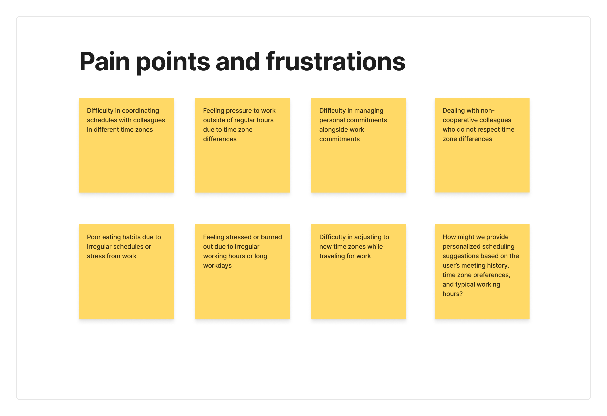
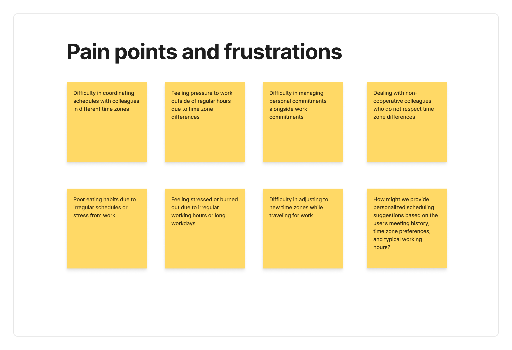
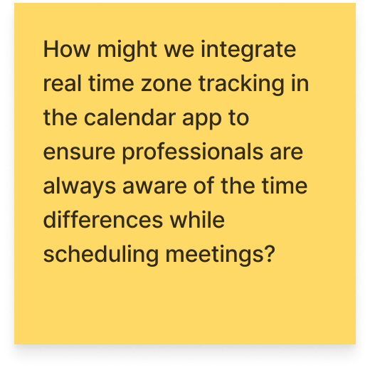

Outlook Case Study
Last Updated On: 2021-08-03 18:14:09
BRIEF
Scope: Design a calendar flow and interface that is smart enough to suggest meeting times accounts for changing time zones and is proactively working for professionals to make sure they are always on time for their meetings.
PROCESS:
- User Survey, User Interview, User Persona, Customer Journey Map, Competitor Benchmarking
- HMWs, User Stories, User Flows
- Wire-framing, High-fidelity Designs
- UI Design
1. EMPATHIZE - EXPLORING THE USER'S NEEDS
User Survey
From the survey , I found out that:
• 94.1% users wants to ensure efficient communication & collaboration
with
colleagues/clients.

• 70.6% users face challenges in scheduling meetings due to conflicting
time zones.
.png)
• 64.7% of users use calendar apps to schedule meetings & events, and also
adjust
working hours to accommodate different time zones

• 88.2% of them haven't received any training or support for managing across
multiple
time zones.
.png)

User Interview
In the survey, I asked people if they would be willing to participate in a 20-25 min
conversation to better understand the problem statement.
6 users were interviewed. The questionnaire consisted of 10-12 questions around
their:
- Definition of work-life balance
- Current tool stack for managing their calendar and behaviour towards using it.
- Challenges faced in the process
- Ideal work-life balance scenario
Observations
- 4 out of 6 users, were using Outlook as part of the organization they were working for.
- 2 out of 4 (50%) had missed meetings because of lack of reminders from the software and its interface.
- 1 out of 4 (25%)was investing more time than usual in setting up meetings and sending out invitations to the recipients, which otherwise, could be spent on other work tasks.
- 2 out of 4 (25%) was unable to find a suitable time for meetings with clients that needed to be scheduled during a specific time of day.
User Persona
Steve Harris is a dedicated and hardworking software engineer who works for a global technology company. He is responsible for developing and maintaining software systems for his clients, who are spread across multiple time-zones. Despite his busy work schedule, he values his personal life and strives to maintain a work-life balance.
.png)
.png) 

User Persona Customer Journey Map
After talking to the users, following was the customer journey identified. This will be used further for identifying opportunities, building user stories & flows, and wireframes

Discovery
The user becomes aware of the need to schedule meetings across different time zones due to their job requirements.
Scheduling
The user creates an event, selects the necessary recipients, selects a meeting time that works for all participants, and sends out invitations.
Preparation
The user prepares for the meetings (recurring or occasional), including reviewing the agenda and any materials that need to be discussed.
Meeting
The user and participants attends the meeting and discuss all the agendas and identifies action items
Post-Meetings
The user reflects on the meeting outcomes & identified action items:
- Smart scheduling algorithms that take into account the availability and time zones of all participants, and suggest the most convenient meeting times.
- Customisation options for meeting details, such as preferred communication channels, agenda items, and follow-up actions, to improve clarity and efficiency for all participants. In addition, providing an option to prioritise attendees.
- Provide a smart time zone detection feature that suggests the best times for scheduling meetings based on the availability of participants in different time zones.
2. Define-Establishing the User's Needs& Problems
How Might We(s) & User Stories
• As a working professional who frequently schedules meetings across different time
zones I want to be able to see the real-time time difference between my location and
the location of my meeting attendees, so that I can avoid scheduling conflicts and
ensure that everyone can attend the meeting at a convenient time.
• As a working professional with a demanding schedule, I want to have a "buffer
time" feature that automatically blocks out time before and after meetings, so that
I can have a breather in between meetings and avoid the stress of back-to-back
appointments.
.png)
As a busy professional who frequently schedules meetings across different time zones, I want to receive personalized scheduling suggestions based on my meeting history, time zone preferences, and typical working hours, so that I can streamline the scheduling process and optimize my productivity.
Product Selection
While interviewing the users, most of them were using Microsoft Outlook as part of their organizations, and considering the insights from the survey & interviews, I chose Microsoft Outlook as my product. Also, in most MNCs, they have subscription for Microsoft Office 365.
User Flow
Based on the following assumptions for the best solution, I created a user flow for the problem in hand
- The user is already using Microsoft Outlook to schedule meetings.
- The user has access to the internet to enable real-time data updates
- User has subscription to Microsoft 365
- The user and their attendees have accurate and up-to-date time zone information set on their respective devices.
- The user is willing to make scheduling adjustments based on the real-time time difference information provided by the solution.
- The user and their attendees are located in areas that use recognized time zones (i.e., they are not located in areas that use non-standard time zones or have a history of frequent changes to their time zones).

Wireframes
For the wireframing and high-fidelity stages, I will choose the web platform because most users operate Outlook via their desktops or laptops. Although Outlook does have a mobile application, the implementation of this solution in the mobile app (Android or iOS) will be covered in the next steps.
According to Statista's 2021 data, the usage distribution of Outlook across different devices was as follows:
- Desktop application (Windows or Mac): 45% of users
- Web-based Outlook: 31% of users
- Mobile application (iOS or Android): 24% of users
.png)
High-fidelity Design
When building the high-fidelity design for this project, it was important to keep in mind Microsoft's Fluent Design System. This design system emphasizes clarity, depth, and simplicity, with a focus on typography, color, and motion. By using Fluent Design, the final product will feel like a natural extension of the Outlook application, and users will be able to easily navigate and understand the new features.
.png)
3. Ideate - Creating the Framework
User Flow